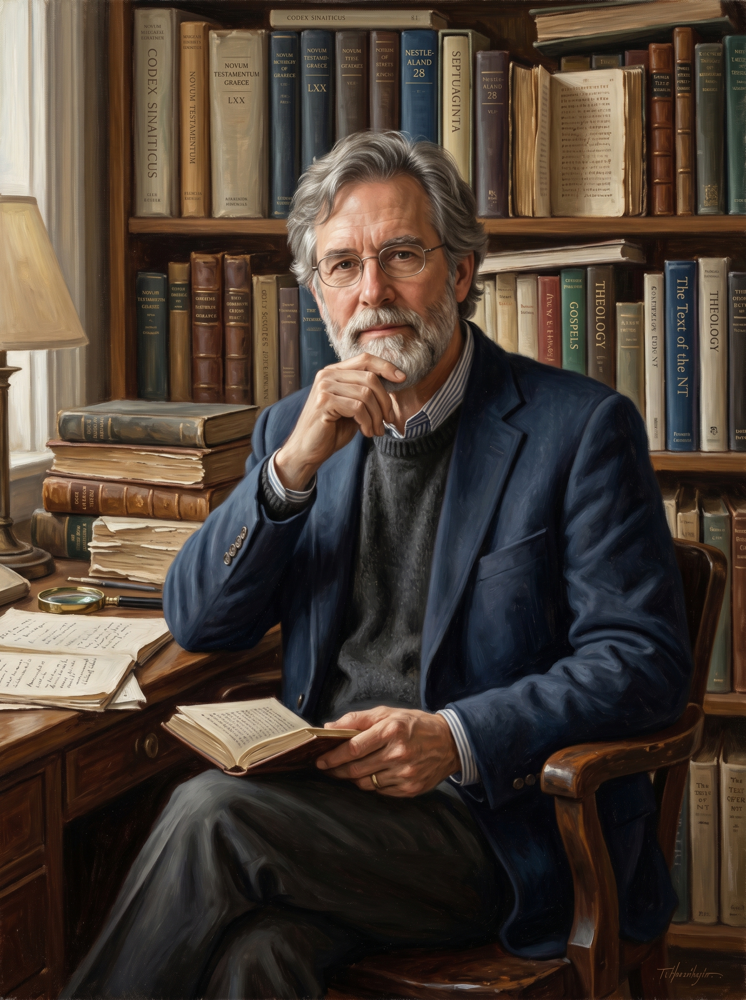

¿Qué hay
de los "errores"?
Hay personas que dicen: "El Nuevo Testamento tiene 200,000 errores". Suena aterrador. Pero no son errores: son variantes de lectura.

No son 200,000 versículos con problemas. Es que la misma variante, repetida en 5,700 manuscritos, se cuenta cada vez. Si una palabra está deletreada distinto en 2,000 manuscritos, eso suma 2,000 "errores" en la estadística… pero es el mismo detalle, en el mismo versículo.
Westcott y Hort: solo 1 de cada 60 variantes tiene alguna relevancia — texto 98.33% puro.
Philip Schaff: de 150,000 variantes conocidas en su época, solo 400 cambian el significado de un pasaje, solo 50 tienen importancia real, y ninguna afecta una doctrina central de la fe.
Bruce Metzger: comparado con el 90% de precisión del Mahabharata hindú y el 95% de la Ilíada, el Nuevo Testamento alcanza un 99.5% — y ese 0.5% restante no toca ninguna doctrina.
Bruce Metzger comparó así la precisión textual: el NT supera a las otras dos grandes obras de la antigüedad — y el 0.5% restante no toca ninguna doctrina.
Una de las máximas autoridades en crítica textual del Nuevo Testamento del siglo XX.
Ejercicio de reconstrucción — Filipenses 4:13
Cuatro "copias" del mismo versículo con errores de copista. ¿Qué decía el original?
- 1."Puedo hacer todas las cosas por medio de Cristo que me da fuerza."
- 2."Puedo hacer todad las cosas por medio de Cristo que me da fuerza."
- 3."Puedo hacer todas estas cosas por medio de Cristo que me da fuerza."
- 4."Puedo hacer todos los adelgazamientos por medio de Cristo que me da fuerza."
No hay ningún misterio sobre qué decía el original. Y los manuscritos reales del Nuevo Testamento tienen menos diferencias entre sí que este ejemplo de práctica.
Otro ejemplo — Juan 3:16
El versículo más conocido de la Biblia, copiado a mano cuatro veces. El orden de las palabras cambia, una palabra se omite… pero el mensaje no se mueve ni un milímetro.
- 1."De tal manera amó Dios al mundo, que dio a su único Hijo."
- 2."Porque amó Dios al mundo, que dio a su único Hijo."
- 3."Porque tanto amó Dios al mundo, que dio a su Hijo."
- 4."Dios amó al mundo de tal manera, que dio a su Hijo."
Cuatro formas distintas de decir la misma frase inicial, y una palabra ("único") que aparece y desaparece. Eso es exactamente lo que es una variante: nadie duda jamás de qué trata el versículo — que Dios amó al mundo y dio a su Hijo.
"Pero incluso un crítico como Bart Ehrman dice que el Nuevo Testamento tiene errores."
Y es cierto — y vale la pena decirlo con honestidad: Ehrman es uno de los críticos más conocidos del Nuevo Testamento, y aun así reconoce que, comparando los miles de manuscritos disponibles, los eruditos pueden reconstruir el texto original con un grado de confianza muy alto. Su desacuerdo no es tanto con la transmisión del texto, sino con si ese texto es inspirado por Dios. Son dos preguntas distintas: ¿qué decía el original? (eso lo sabemos con gran precisión) y ¿es verdad lo que dice? (esa es la pregunta de la Sesión 8).

Uno de los críticos más citados del NT — y aun así afirma que el texto original se reconstruye con alta confianza.